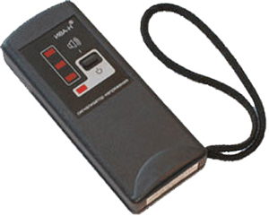

Сигнализатор напряжения "ИВА-Н"
Сигнализатор напряжения "ИВА-Н" (СН) позволяет с земли или с опоры определять наличие напряжения на воздушных линиях электропередачи 6-35 кВ.
С помощью СН "ИВА-Н" можно также:
- контролировать исправность защитного заземления у включенного электрооборудования;
- определять наличие напряжения на проводе;
- устанавливать расположение скрытой проводки, находящейся под напряжением 220 В;
- находить обрыв фазного провода скрытой проводки, находящегося под напряжением;
- проверять правильность монтажа выключателей электроосвещения.
Сигнализатор напряжения "ИВА-Н" оснащен системами световой и звуковой сигнализации, а также устройством контроля работоспособности.
Порядок применения СН "ИВА-Н" смотрите в Руководстве по эксплуатации ИВА-Н
Особенности применения на ВЛ 6-35 кВ
- Сигнализатор напряжения "ИВА-Н" на расстоянии предупреждает работающего о наличии напряжения на токоведущих частях (реагирует на электрическую составляющую электромагнитного поля).
- СН "ИВА-Н" предназначен для работы в электроустановках частотой 50 Гц.
- При определении с земли наличия напряжения на проводах воздушной линии с помощью СН "ИВА-Н" следует располагаться на участках, где расстояние от проводов до земли близки к наименьшим допускаемым. Прибор должен находиться в руке выше головы.
- При работе вне помещения в солнечную погоду наличие напряжения контролируется по звуковой сигнализации и светодиоду в нижнем торце корпуса СН.
- Так как вблизи заземленных опор ВЛ, заземленных конструкций, экранов напряженность электрического поля близка к нулю, использовать СН "ИВА-Н" следует от них на расстоянии не менее 10 метров.
Установление расположения скрытой электропроводки
- Перемещая СН вдоль стены, определить по срабатыванию «ИВА-Н» зону, в которой расположена скрытая проводка;
- Положение фазного провода выявляется в этой зоне по максимальному числу одновременно горящих светодиодов (не обязательно всех четырех), которые расположены на лицевой панели. Число горящих светодиодов пропорционально напряженности электрического поля.
Контроль исправности защитного заземления
При приближении переднего торца СН к незаземленному корпусу включенной электроустановки «ИВА-Н» должен сработать. Если же заземление исправно, то на расстоянии 10-15 мм от корпуса СН будет оставаться в дежурном режиме.
Определение обрыва фазного провода проводки
Определение места обрыва проводится на проводе, находящемся под напряжением. Поиск осуществляется перемещением СН вдоль проводки до места, где сигнализатор будет переходить из рабочего режима в «дежурный» (или наоборот), сигнализируя об исчезновении (или появлении) электрического поля.
Характеристики:
| Габаритные размеры, мм | 130х52х22 |
| Масса, не более, г | 120 |
| Продолжительность работы (дежурный режим), не менее, ч |
100 |
| Температурный диапазон, °C | -20 ... +40 |
| Питание СН - автономное, от двух элементов R6 - AA-UM3 (А316), В |
3 |
| Срок службы, год, не менее | 6 |
Разработка и сертификация
Разработан и изготавливается Научно-производственным центром "Электробезопасность", г. Киров.
Сигнализатор напряжения "ИВА-Н" соответствует требованиям ТУ 4224-011-02068344-97 и сертифицирован в системе ГОСТ Р (Сертификат ГОСТ Р № РОСС RU.АИ50.Н13853 от 05.11.2008 г.).
Гарантийный срок эксплуатации сигнализатора напряжения "ИВА-Н" - 2 года со дня отгрузки с предприятия-изготовителя.